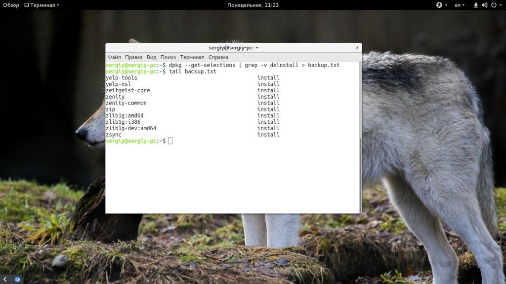
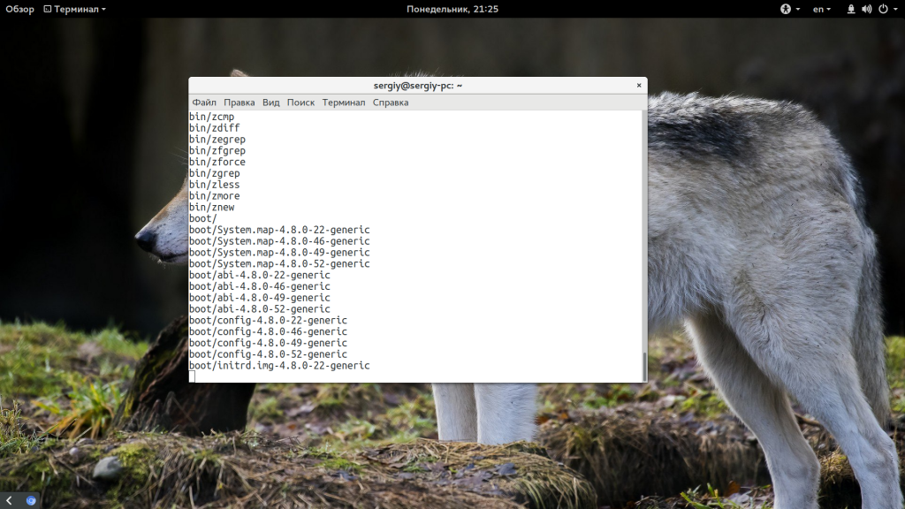
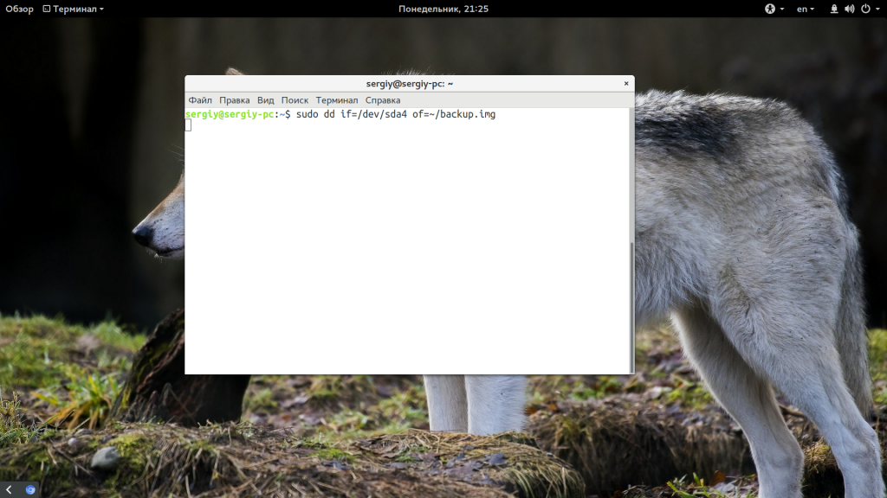

Рассмотрим самые распространенные способы копирования среди администраторов и обычных пользователей.
Самый простой способ резервного копирования Ubuntu, кстати, именно эту возможность использует MintBackup в LinuxMint, это получение списка всех установленных пакетов. Да, тут вы не сохраните всю конфигурацию, зато сможете очень быстро восстановить все установленные программы.
Если учесть, что большинство конфигурационных файлов находятся в домашней папке пользователя, а она не стирается при переустановке, то остальные файлы не такая уже большая проблема. А такая резервная копия будет занимать всего несколько килобайт. Для выполнения резервной копии наберите такую команду:
dpkg --get-selections | grep -v deinstall > backup.txt

Далее, скопируйте полученный файл в надежное место. Когда система сломается, переустановите ее с установочного носителя, а затем просто выполните команды:
sudo dpkg --set-selections < backup.txt
sudo apt-get -y update
$ sudo apt-get dselect-upgrade
Файл со списком пакетов нужно поместить в текущую папку. Таким образом, вы очень быстро вернете все ранее установленные программы с минимальными затратами времени и в то же время получите чистую систему.
Резервное копирование таким способом более надежно, поскольку вы не просто создаете список установленных программ, а делаете архив из всей файловой системе. Фактически, вы можете потом развернуть этот архив на любой машине и получить полноценную операционную систему после настройки драйверов.
Таким способом часто создаются резервные копии систем на серверах и для него достаточно просто использовать утилиту tar и не нужны сторонние программы. Для создания архива используйте такую команду:
sudo tar czf /backup.tar.gz --exclude=/backup.tar.gz --exclude=/home --exclude=/media --exclude=/dev --exclude=/mnt --exclude=/proc --exclude=/sys --exclude=/tmp /
В этой команде все достаточно просто несмотря на ее запутанность. Опция c означает, что нужно создать архив (Create), z - включает сжатие Gzip. Затем с помощью опции -f мы указываем файл, в который нужно сохранить результат. Затем с помощью серии опций --exclude мы исключаем из архива сам файл архива, домашний каталог и директории с виртуальными файловыми системами. В самом конце указываем папку, с которой стоит начать сбор данных - /. Вот и все. Процесс займет очень много времени, но когда он завершится, вы получите полную резервную копию системы в корневом каталоге.
Если система повреждена, вам нужно загрузиться с LiveCD/USB, и примонтировать корневой каталог в /mnt/. Затем подключите носитель с резервной копией и выполните команду для распаковки:
sudo tar xf /run/media/имя_носителя/backup.tar.gz -C /mnt
Команда быстро распакует все, что было сохранено и вам останется только перезагрузить компьютер, чтобы вернуться к своей основной системе. Здесь не восстанавливается только загрузчик, восстановить Grub нужно отдельно если он был поврежден.
Способ 3. Резервное копирование в rsync
Этот способ очень похож на второй, но здесь архив не создается, а данные просто переносятся в другую папку. Это может более полезно при простом копировании операционной системы в другое место. Команда выглядит вот так:
rsync -aAXv --exclude={"/dev/*","/proc/*","/sys/*","/tmp/*","/run/*","/mnt/*","/media/*","/lost+found"} / /папка/назначения

Набор опций -aAX включают передачу в режиме архива, что гарантирует полное копирование символических ссылок, устройств, разрешений и расширенных атрибутов, при условии, что их поддерживает целевая файловая система. Опция --exclude, как и раньше, исключает из копии виртуальные файловые системы.
После завершения копирования вам останется отредактировать /etc/fstab и заменить в нем адрес корневого раздела на новый. А также создать новый конфигурационный файл для загрузчика, автоматически или вручную.
Способ 4. Создание образа раздела
Команда dd linux позволяет создать полную копию раздела или даже всего диска. Это самый надежный, но в то же время потребляющий большое количество памяти способ выполнить резервное копирование системы Ubuntu. Утилита просто переносит весь диск по одному байту в образ. Команда выглядит вот так:
sudo dd if=/dev/sda4 of=~/backup.img

Здесь /dev/sda4 - это ваш корневой раздел. После завершения выполнения команды вы получите готовый образ, затем, чтобы восстановить систему из этой копии достаточно поменять опции местами и указать путь к файлу копии:
sudo dd if=~/backup.img of=/dev/sda4
Правда, процесс может занять достаточно много времени, в зависимости от скорости работы вашего диска.
Способ 5. Создание Squashfs образа
Преимущество Squashfs в том, что это полноценная файловая система в одном файле, которую можно очень быстро примонтировать и быстро извлечь нужные файлы. Кроме того, файловую систему можно открыть привычными менеджерами архивов. Для создания образа со всей системы используйте:
sudo mksquashfs / /root-backup.sqsh -e root-backup.sqsh home media dev run mnt proc sys tmp
Теперь, чтобы примонтировать созданный образ будет достаточно набрать такую команду:
sudo mount /root-backup.sqsh /mnt/ -t squashfs -o loop
А уже отсюда вы можете извлечь любой файл или перенести все это в реальную файловую систему с помощью cp -p.
Резервное копирование Ubuntu 16.04 очень важно для поддержания вашей операционной системы в нормальном состоянии. В случае любой неожиданной ситуации вы сможете все восстановить. Если вас интересуют графические программы для бэкапа, вы можете попробовать remastersys или timeshift. Надеюсь, эта информация была полезной для вас.